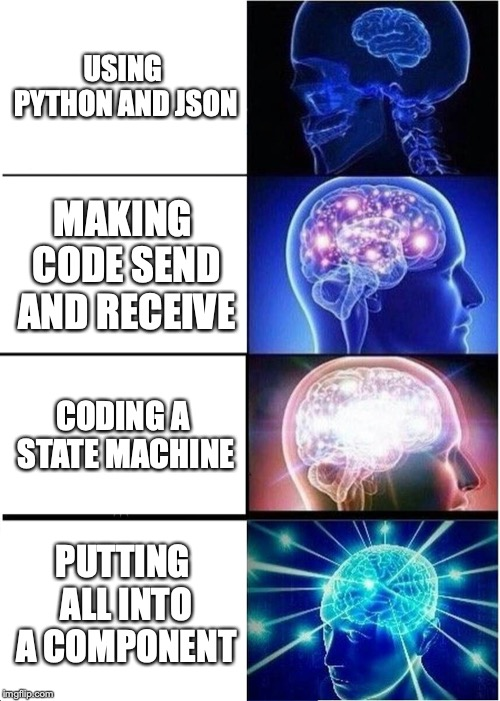

Components
So far, we have created single state machines, and just connected them with MQTT to let them communicate, but we didn’t build anything with them yet. This week we want to combine several concepts to build a more complete software component.

STMPY Components + MQTT
To ensure a low degree of coupling, we connect components only by means of MQTT as communication between them. This means, components can run wherever the MQTT broker is reachable, and they can communicate asynchronously.
The state machines alone would not make good components. They are too dependent on communication (here MQTT) and other coide that they interact with. For cohesion, we therefore combine state machines with an MQTT communication client into a single component. This enables technically a better degree of cohesion.
These means alone do not ensure a low degree of coupling and a high degree of cohesion. A good component design depends on how we manage to group the functions we need for a system or application into the different components. This means we still have to put the right functions into the right components, but having them communication-wise decoupled already helps.
State Machines as Sessions
So far, we have only looked at singe instances of state machines, because they controlled a single resource.
- The kitchen timer was controlling a single hardware plug, and we hence had only a single state machine.
- The bus stop had a single button and signal light, which we could take care of with a single state machine.
In some systems, there are multiple resources to control. For instance, imagine a parrking lot with chargers for electrical cars. Each charger deserves its own state machine to keep track of the states of the car. Integrating all charging logic into a single state machine is not recommended — the state machine would not be able to meaningfully track the state of each single charger.
And now imagine that the number of resources is dynamic, and changes at runtime. Imagine for example, that you have a management system for keeping track of customers in a recycling station, where you want to represent each customer with a state machine to keep track of their states from entering to exiting.
For such cases, we keep on using a single state machine per resource it represents. But we add the possibility to create several instances of the same state machine, and address them with an id. Each state machine instance is then called a session.
For our component model this means that a component manages usually state machine sessions, that means, potentially many instances of them.
Timer Module for a Voice Assistant
Your task is to build the module that allows a voice assistant to maintain timers. The timers should have a name, and it should be possible for a user to start as many timers as they want. This means, a user should be able to say:
“Hey Assistant, please start a 10-minute spaghetti timer.”
During this timer is active, the user can start another timer:
“Hey Assistant, start a 2-minute green tea timer.”
These timers are independent of each other. Once they expire, the assistant says:
“Your green tea timer is ready!”
And then later:
“Your spaghetti timer is ready!”
The part of the system you are concerned with looks as follows:
The voice command detection is responsible for listening for the activation command (“Hey Assistant”), and the subsequent interpretation of the command. It uses some support from the data center, which we are not concerned with here.
The text-to-speech engine runs locally. It receives strings that are then transformed into speech.
You should design the timer manager in the middle. It receives commands from the voice command detection, should maintain the control over the necessary timers, and produce commands for the text-to-speech engine.
From the voice command detection, you may receive the following commands:
- Starting a new timer: The command is called timer_start and includes the name of the timer (string) and the duration already converted into seconds (as int).
- Stopping a timer: The command is called timer_stop and includes the name of the timer (string) that should be stopped.
- Status: The command is called timer_status. The user can either ask for a specific timer, then the name is set. If the name is not set, the device should present a list of all currently active timers.
The text-to-speech just accepts a command that contains a sentence in English. For the timers, you will probably produce the following texts:
- “Your spaghetti timer is ready!”
- “You have 30 seconds left on the spaghetti timer.”
- “You have 2 active timers, spaghetti and green tea.”
Component Template
You can use our code template for components that contains a lot of the boilerplate code that is useful for any component that connects STMPY state machines with MQTT:
TimerManager.py
Logging
Logging is important to figure out what the system is doing, especially when something is going wrong. When configuring logging, we can select a log level, which determines which messages are printed. There are the following log levels:
- DEBUG: Most fine-grained logging, printing everything
- INFO: Only the most important informational log items
- WARN: Show only warnings and errors.
- ERROR: Show only error messages.
Different parts of our component have different log levels, the code below registers the log level for the main component (with name __name__):
To change the log level for STMPY state machine:
Communication: MQTT Client and JSON
The component has its own MQTT client that gets configured and started with the main component.
JSON
JSON is a way to serialize data into strings. Have a look at the notebook below:
Notebook about JSON
For the timer system, you can use the following JSON encodings:
Incoming Messages
Messages arrive in the components function on_message(). In this message, we need to determine what the incoming message is, get any data it may have as payload, and then react on it.
If the payload is given as JSON-encoded string, we can get back a dictionary with the following lines:
Since the message can be formatted wrong, we should wrap this in an exception handler. Based on the content or type of the message, we may for instance create a state machine session (see below), or send a message into a machine.
Publishing
Publishing works via the MQTT client, for example in the effect of a transition of the state machine. This works exactly like we used MQTT before, we get access to the client via the component’s variable.
Sessions: Several Instances of State Machines
The behavior of a single timer is quite simple, and we can draw the following state machine that takes care of the necessary operations:
In our example it is important that the assistant can keep track of several timers at the same time. We want to do this by creating a single state machine instance for each timer. Each state machine can then take care of a single timer. These state machine instances are also called sessions. This may seem like an overhead for this simple scenario, since the timer is a relatively easy behavior, but this is a clean solution that also works well for much more complicated interactions.
In our component, we can create and start a new session with the following code:
Task: Create the Timer Component
Step 1: Sequence Diagrams
Create two sequence diagrams for the scenario with a 10-minute timer “spaghetti”, and a 2-minute timer “green tea”.
- Create one version in which you show the MQTT messages, including publish and subscribe, including the MQTT broker as lifeline.
- Create another, more high-level sequence diagram, in which you don’t show the MQTT broker and only show messages between the system components, as if they were sending directly to each other.
Step 2: Start the Command Component
Because we don’t have a speech-to-text engine, we send in the commands to the component from buttons of a GUI component. This is how it looks like:
Do the following:
Start your own broker.- Use
mqtt.item.ntnu.no with port 1883 as broker.
- Download the code of the command component and study it.
- Adjust the topics.
- Run the component and see commands coming in by using MQTT.fx for debugging.
Step 2: Implement the Components
Use the component template, and add the required code in the places marked with TODO.
Send Timer commands into the component using the GUI.
- See if your component works as intended and sends the required messages to the Text To Speech component.
- Just emulate the Text To Speech Component by subscribing with MQTT.FX to the corresponding topic.
- Reflect on your progress in a document.
Create a short and uncut demo video using two named timers, simulated via MQTT.FX and your timer manager component.
Checklist
Blackboard
- Deliver your document that shows progress and results.
MS Teams
- Ask for feedback in general
- Report any errors with the provided solution
- Discuss, with me or other teams
Team Reflection for This Unit
- Add another section to the team reflection document, just like every week.
Individual Reflection
- Fill out the individual reflection survey.
- Copy the answers into a document that you maintain on your own.
- Add any additional observations to your reflection diary.